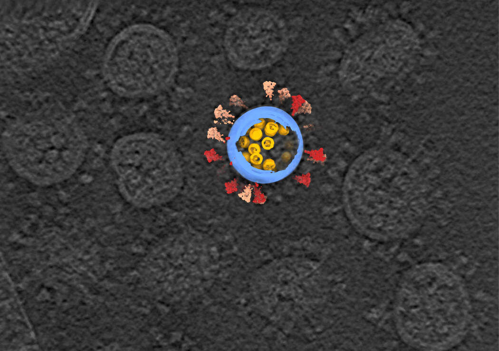
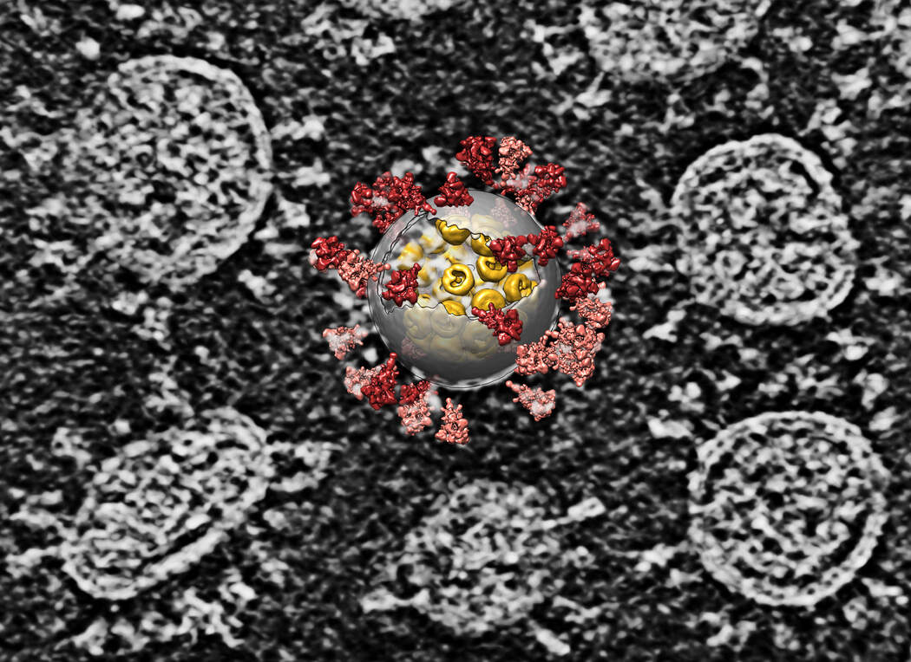
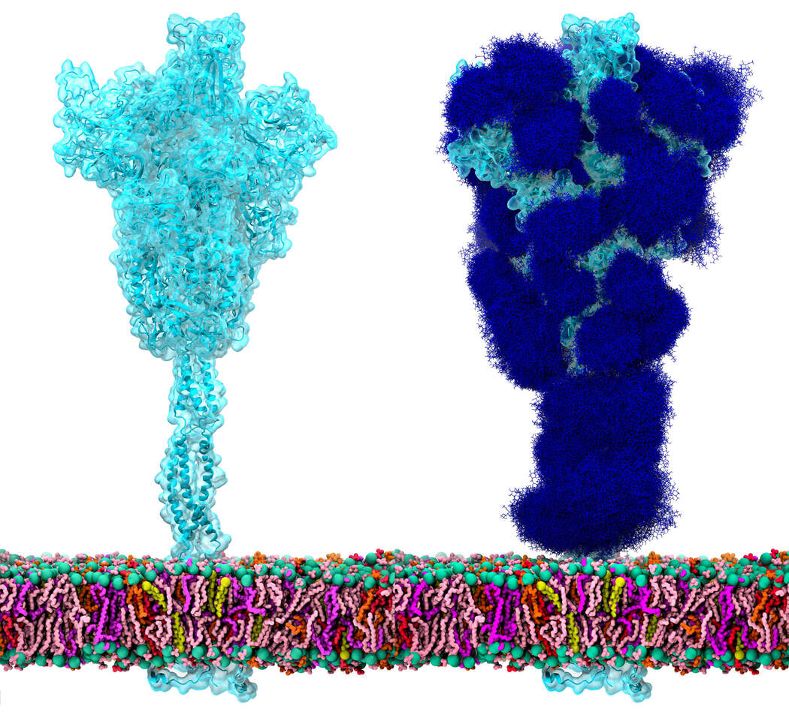
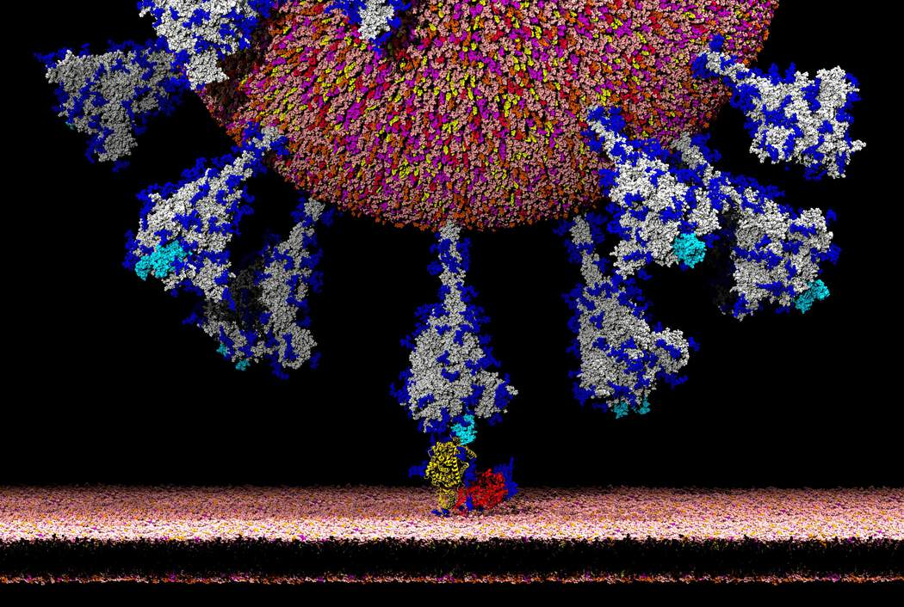
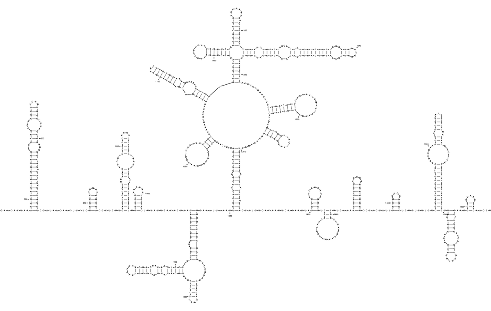
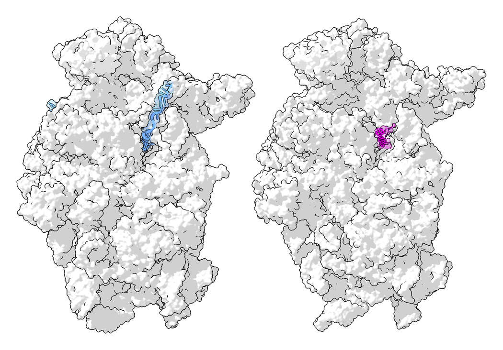
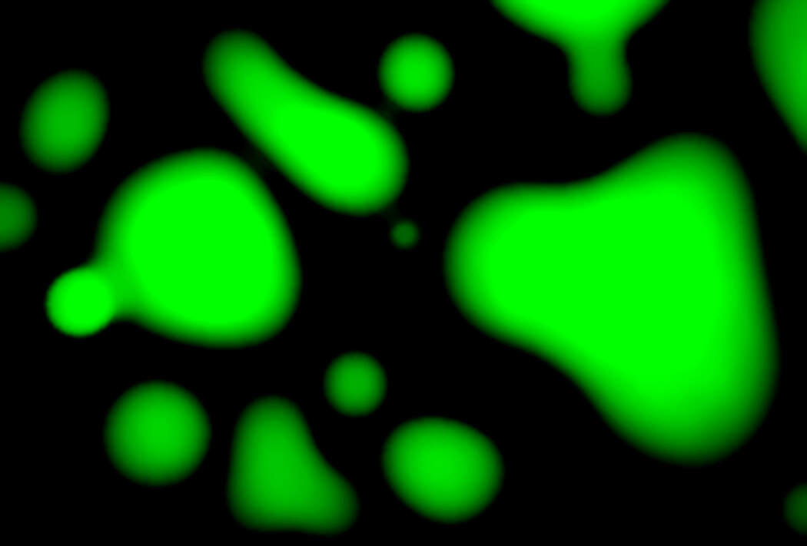
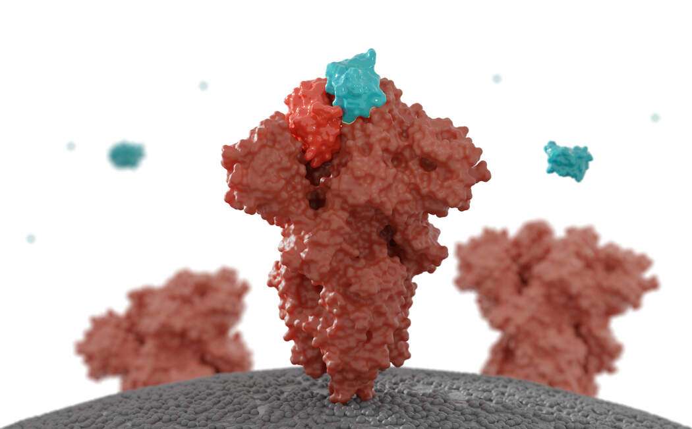

The Coronavirus Unveiled
By
Carl ZimmerOct
In February, as the new coronavirus swept across China and shut down entire cities, a scientist named Sai Li set out to paint its portrait.
At the time, the best pictures anyone had managed to take were low-resolution images, in which the virus looked like a barely discernible smudge.
Dr. Li, a structural biologist at Tsinghua University in Beijing, joined forces with virologists who were rearing the virus in a biosafety lab in the city of Hangzhou. Those researchers doused the viruses with chemicals to render them harmless and then sent them to Dr. Li.
Dr. Li and his colleagues then concentrated the virus-laden fluid from a quart down to a single drop. He could only hope that they had done everything just right, so that the weeks of work to produce that drop would not have been a waste.
“At the time, you don’t know what’s inside,” Dr. Li said. “It’s just liquid, right?”
Glimpsing the Structure
Dr. Li carefully froze the drop in a fraction of a second. If he made the slightest mistake, ice crystals could spear the viruses, tearing them apart.
Hoping for the best, Dr. Li placed the smidgen of ice into a cryo-electron microscope. The device fired beams of electrons at the sample. As they bounced off the atoms inside, Dr. Li’s computer reconstructed what the microscope had seen. When the picture formed, he was taken aback.
“I saw a screen full of viruses,” Dr. Li recalled.
 A cryo-electron tomography image of SARS-CoV-2 viruses, in gray, with a computer reconstruction of one virus.He could see thousands of coronaviruses packed in the ice like jellybeans in a jar. They were beautifully intact, allowing him to inspect details on the viruses that measured less than a millionth of an inch.
“I thought, I was the first guy in the world to see the virus in such good resolution,” Dr. Li recalled.
Over the following weeks, Dr. Li and his colleagues pored over the viruses . They inspected the proteins that studded its surface and they dove into its core, where the virus’s strand of genes was coiled up with proteins. The pictures reminded Dr. Li of eggs in a nest.
 A computer reconstruction overlaid on an image of several SARS-CoV-2 viruses.Thanks to the work of scientists like Dr. Li, the new coronavirus, known as SARS-CoV-2, is no longer a cipher. They have come to know it in intimate, atomic detail. They’ve discovered how it uses some of its proteins to slip into cells and how its intimately twisted genes commandeer our biochemistry. They’ve observed how some viral proteins throw wrenches into our cellular factories, while others build nurseries for making new viruses. And some researchers are using supercomputers to create complete, virtual viruses that they hope to use to understand how the real viruses have spread with such devastating ease.
“This time is unlike anything any of us has experienced, just in terms of the bombardment of data,” said Rommie Amaro, a computational biologist at the University of California at San Diego.
Probing the Spike
Earlier this year, Dr. Amaro and other researchers directed much of their attention to the proteins, called spikes, that stud the virus’s surface. Spike proteins have an essential job to play: They latch onto cells in our airway so the virus can slip inside. But it soon became clear that the name is a misnomer. The spike protein is not sharp, narrow or rigid.
Each spike protein snaps together with two others, forming a structure that has a tulip-like shape. A long stem anchors the proteins to the virus, and their top looks like a three-part flower.
Gerhard Hummer, a computational biophysicist at the Max Planck Institute of Biophysics, and his colleagues used the frozen microscopy method to take pictures of spike proteins embedded in the virus membrane. Then they calculated how the atoms in the proteins pushed and pulled on each other. The result was a molecular dance: The spike proteins swivel around on three hinges .
A simulation of four spike proteins, each bending on three hinges.“You can see these flowers waving with all kinds of bending angles,” Dr. Hummer said. “It’s quite surprising to have such a long, slender stalk with so much flexibility.”
A Sugar Shield
Dr. Hummer speculated that the flexibility of the spike was important to the virus’s success. By sweeping around, the spike increases its odds of encountering the protein on the surface of our cells it uses to attach.
As they sweep around, however, the spikes can be attacked by antibodies, the powerful soldiers of our immune system. To hide, they create a shield out of sugar . Sugar molecules, in navy below, swirl around the proteins and hide them from antibodies.
 A spike protein, at left, and a protective coating of sugars, at right.A little hook at the end of the spike protein, in light blue below, sometimes flips up above the sugar shield. If it encounters a particular protein on the surface of our cells, it sets off a series of reactions that allows the virus to fuse to a cell membrane and inject its genes.
 Latching on to an ACE2 receptor, in yellow, allows the coronavirus to enter human cells.Tangled Loops
The genes of the new coronavirus are arrayed on a molecular strand called RNA. On Jan. 10, Chinese researchers published its sequence of 30,000 letters. That genetic text stores the information required for a cell to make the virus’s proteins.
But the genome is more than a cookbook. The strand folds into a devilishly complex tangle. And that tangle is crucial for the virus’s exploitation of our cells. “You have a lot more information stored in how it’s shaped,” said Sylvi Rouskin, a structural biologist at the Whitehead Institute.
Dr. Rouskin led a team of scientists who mapped that shape. In a high-security lab at Boston University, her colleagues infected human cells with the viruses and gave them time to make thousands of new RNA strands. Tagging the genetic letters on the strands with chemicals, Dr. Rouskin and her colleagues could determine how the strand folded in on itself.
 A small portion of the coronavirus genome, showing how it folds into loops.In some places it only formed short side-loops. In other places, hundreds of RNA letters ballooned out into big hoops, with loops coming off, and more loops coming off of them. By comparing millions of viral genomes, Dr. Rouskin and her colleagues discovered places where the virus slips from one shape to another.
A number of researchers are now closely examining some of these regions to figure out what they’re doing. Their studies suggest that these knots allow the virus to control our ribosomes, the tiny cellular factories that pump out proteins.
After the virus enters a human cell, our ribosomes attach to its RNA strands and glide down them like a roller coaster car running along a track. As the ribosomes pass over the genetic letters, they build proteins with corresponding structures. Scientists suspect that the loops of RNA may throw the roller coaster car off its track and then guide it to a spot thousands of positions away.
Other loops force the ribosome to back up a bit and then move forward again. This little hiccup can cause the virus to make entirely different proteins from the same stretch of RNA.
Jamming the Machinery
The viral proteins that spew out of our ribosomes fan out across the cell to carry out different tasks. One of them, called Nsp1, helps seize control of our molecule machinery.
Joseph Puglisi, a structural biologist at Stanford, and his colleagues mixed Nsp1 proteins and ribosomes together in test tubes. They found that the proteins, in pink below, slipped neatly into the channels inside the ribosomes where RNA would normally fit.
 A ribosome with RNA, in blue, and with Nsp1, in pink.Dr. Puglisi suspects that Nsp1 stops our cells from making proteins of their own — especially the antiviral proteins that could destroy the virus. But that raises the question of how the virus gets its own proteins made.
One possibility is that “somehow the virus is just amped up in its ability to produce protein,” Dr. Puglisi said. From time to time, Nsp1 falls out of ribosomes, and somehow the virus does a better job of taking advantage of those brief opportunities. “We hoped it was going to be something simple,” he said. “But, as usual in science, it wasn’t.”
Blobs and Droplets
While Nsp1 is manipulating ribosomes, other viral proteins are busy making new viruses. A half-dozen different proteins come together to make new copies of the virus’s RNA. But something remarkable happens along the way: Together, the proteins and RNA spontaneously turn into a droplet, akin to a blob in a lava lamp.
Physicists have long known that molecules in a liquid spontaneously form droplets if the conditions are right. “This is just making salad dressing,” said Amy Gladfelter, a cell biologist at the University of North Carolina.
A pair of droplets made of proteins and RNA fuse together.But only in recent years have biologists discovered that our cells regularly make droplets for their own purposes. They can bring together certain molecules in high concentrations to carry out special reactions, shutting out other molecules that can’t enter the droplets.
Richard Young, a biologist at the Whitehead Institute, and his colleagues have mixed together SARS-CoV-2 proteins that build new RNA along with RNA molecules. When the molecules assemble, they spontaneously form droplets. The virus likely gets the same benefits as the cell does from this strategy.
 A microscopy image of droplets formed by SARS-CoV-2 proteins and RNA.Given the sophistication of the coronavirus in so many other regards, Dr. Young wasn’t surprised by his discovery. “Why wouldn’t viruses exploit a property of matter?” he said.
Pores and Tunnels
Coronaviruses can coax human cells to form new chambers to house their genetic material. But when Montserrat Bárcena, a microscopist at the Leiden University Medical Center in the Netherlands, inspected those chambers, she was baffled: There seemed to be no holes in the membranes, allowing no path for the RNA to get in or out.
Recently, Dr. Bárcena and her colleagues took a closer look and discovered a way through. One of the coronavirus’s proteins, called Nsp3, folds into a tunnel , which then plugs itself into the membranes.
New coronavirus RNA strands, in green, build up inside chambers created by the virus. The chambers are studded with small viral proteins, in red, that may be escape routes for the RNA.“It’s a coronavirus escape route,” Dr. Bárcena said. “We had this riddle, and now we have an answer.”
Assembling New Viruses
In a matter of hours, an infected cell can make thousands of new virus genomes. The cell’s ribosomes read their genes, spewing out even more viral proteins. Eventually, some of those proteins and the new genomes assemble themselves to make new viruses.
This is no easy task, because the coronavirus’s strand of genes is a hundred times longer than the virus itself.
Recent experiments suggest that, once again, SARS-CoV-2 uses lava-lamp physics to its advantage. Proteins called nucleocapsids glue themselves to spots along the length of the RNA strand. Together, the molecules quickly collapse into droplets.
New coronaviruses, in pink, form inside cell vesicles.Dr. Gladfelter speculated that this strategy prevented two strands of genes from becoming tangled with each other. As a result, each new virus winds up with just one set of genes.
These droplets are swallowed up inside viral membranes and spike proteins, and the new viruses are ready to escape the cell. To simulate these viruses down to every atom, Dr. Amaro is gathering the emerging pictures of SARS-CoV-2 proteins and RNA. She and her colleagues then construct virtual viruses on supercomputers, each consisting of a half-billion atoms. These machines can then use the laws of physics to simulate the dancing of the viruses every femtosecond: in other words, a millionth of a billionth of a second.
Dr. Amaro and her colleagues hope to use her simulated viruses to tackle one of the most contentious questions about Covid-19: how the virus spreads from person to person.
When infected people exhale, talk or cough, they release tiny drops of water laden with viruses. It’s not clear how long SARS-CoV-2 can survive in these drops. Dr. Amaro is planning to build these drops, down to their individual water molecules, on her computer. Then she’ll add viruses and watch what happens to them.
A video tour of a simulated coronavirus, based on new studies of its surface proteins.“I’m pretty confident that probably within a year, we would be able to have the whole virus, including all the bits on the inside,” she said.
Drugs and Vaccines
Already, however, the new pictures of SARS-CoV-2 have become essential for the fight against the pandemic. Vaccine developers study the virus’s structure to ensure that the antibodies made by vaccines grip tightly to the virus . Drug developers are concocting molecules that disrupt the virus by slipping into nooks and crannies of proteins and jamming their machinery.
 A drug molecule, in blue, blocks the tip of the coronavirus spike.The virus’s genome may offer other targets. Drugs may be able to lock onto loops and tangles to prevent the virus from controlling our ribosomes. “It’s very important that you know what the shape is, so you can develop the right chemistry to bind to that shape,” Dr. Rouskin said.
Dr. Gladfelter, meanwhile, wants to see if the physics of viral droplets may offer a new line of attack against SARS-CoV-2.
“You could get a compound that would make them stickier, make them more jelly,” she said. “There are probably a lot of Achilles’ heels.”
Future Research
While the past few months have delivered a flood of data about the virus, some studies have made it clear that it will take years to make sense of SARS-CoV-2.
Noam Stern-Ginossar and her colleagues at the Weizmann Institute in Israel, for example, have found evidence that the virus makes proteins that scientists have yet to find.
Dr. Stern-Ginossar and her colleagues surveyed the RNA of the virus in infected cells, tallying up all the ribosomes that were reading it. Some ribosomes clustered along known genes. But others were reading genes that had never been found before.
Ribosomes sometimes read just a section of the spike protein gene, for example. Presumably they make a mini-spike, which may very well carry out some essential job for the virus. A drug that disables it might cure Covid-19.
But scientists can’t even begin to guess at these possibilities, because no one has yet spotted the mini-spike in the wild. And the same will be true for the other new genes, Dr. Stern-Ginossar’s team has found.
“Each one will require additional work to figure out what they’re doing,” she said. “Biology takes time.”
Produced by Jonathan Corum.
Correction: An earlier version of this story misspelled the first name of a scientist. She is Montserrat Bárcena, not Monsterrat.